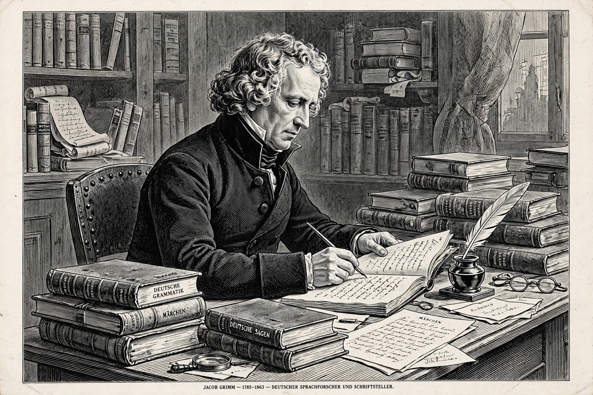

| Grimm's law | |
|---|---|
| Also called | First Germanic consonant shift; Rask–Grimm rule |
| Formulated | Rasmus Rask (1818); Jacob Grimm, Deutsche Grammatik (1822) |
| Applies to | Proto-Germanic, separating it from other Indo-European branches |
| Refinement | Verner's law (1875) explains the main exceptions |
Grimm's law, also known as the First Germanic Consonant Shift, is a set of systematic sound changes that affected the stop consonants of Proto-Indo-European (PIE) as it developed into Proto-Germanic. It is one of the earliest and most famous sound laws in historical linguistics, and it sharply distinguishes the Germanic languages (English, German, Dutch, the Scandinavian languages, Gothic) from their Indo-European relatives. The changes are thought to have occurred over several centuries in the 1st millennium BCE.
The correspondences were first systematically observed by the Danish philologist Rasmus Rask in 1818 and were popularised, in expanded form, by Jacob Grimm — better known for the fairy tales he collected with his brother Wilhelm — in the second edition of his Deutsche Grammatik (1822).
Grimm's law describes a chain shift of the three PIE series of stops:
| PIE | Proto-Germanic | Example (Latin → English) |
|---|---|---|
| *p, *t, *k, *kʷ | fricatives *f, *þ (th), *x (h), *xʷ (hw) | piscis → fish; trēs → three; canis → hound |
| *b, *d, *g, *gʷ | voiceless stops *p, *t, *k, *kʷ | decem → ten (cf. two); genu → knee |
| *bʰ, *dʰ, *gʰ, *gʷʰ | voiced fricatives/stops *b, *d, *g, *w | frāter → brother; foris → door |
In plain terms: voiceless stops became fricatives (p → f, t → th, k → h); plain voiced stops became voiceless stops (d → t); and voiced aspirated stops became plain voiced stops or fricatives (bʰ → b, dʰ → d). Each series moved into the space vacated by the next, like seats in a game of musical chairs — hence "chain shift". The native German technical term is the erste Lautverschiebung. A later, separate change confined to southern German dialects, the High German consonant shift, is accordingly called the Second Consonant Shift.
The shift also explains why many English words borrowed later from Latin or French do not show the changes: paternal (borrowed) beside native fatherly, pedal beside foot — the borrowed words entered English after the shift had run its course.
Some words seemed to break the law: PIE *t should give English th, yet in father and mother the outcome is a voiced sound (d/th as in the). In 1875 Karl Verner showed that the fricatives produced by Grimm's law became voiced when the PIE accent did not fall on the immediately preceding syllable. Verner's law rescued the Neogrammarian doctrine that sound change is regular and exceptionless — apparent exceptions reflect conditioning factors awaiting discovery. Modern English pairs such as was/were and seethe/sodden preserve its effects in alternations within paradigms.

Grimm's law was a founding demonstration that sound change is systematic rather than haphazard corruption, and it made the comparative method predictive: given a word in one branch, scholars could state what its Germanic cognate should look like. Its residue is visible throughout everyday English vocabulary and explains the spelling–meaning mismatches between English and the classical languages. Languages affected by it, and by later related shifts, define the Germanic branch whose proto-language is reconstructed as Proto-Germanic.